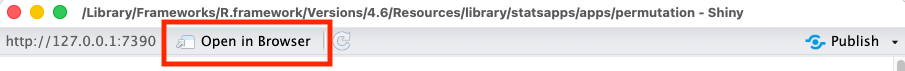
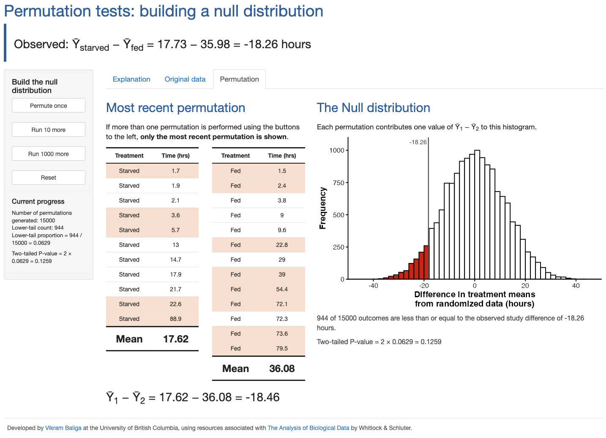

The statsapps R package features interactive Shiny apps to help you learn concepts from data science & statistics.
Installation
You can install the development version of statsapps from this GitHub repo with:
# install.packages("pak")
pak::pak("vbaliga/statsapps")Example
All apps can be started via functions from statsapps. Each app can be started using a function that begins with run_. For example, use run_permutation_app() to start the Shiny app for the Permutation Test.
This will open a new window with the Shiny app. It is recommended to hit the “Open in Browser” button at the top to get the best view of the app. This will open the app in your default web browser.

The example we showcase here is the Permutation Test app, demonstrates how repeated random reassignment of observations can be used to build a null distribution for a two-sample permutation test. As with all statsapps, this app is interactive and allows you to see the results of individual permutations, and how the result of each permutation incrementally builds the null distribution.
There are several tabs within the main window of the app. The first two tabs provide an explanation and the original data. The third tab shows the results of performing permutations. The buttons in the left sidebar allow you to perform permutations and visualize the outcome of the most recent permutation.
